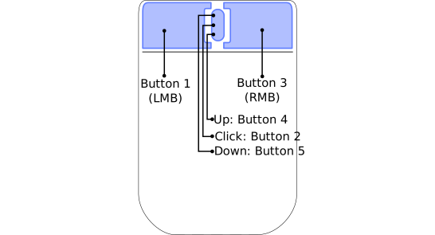
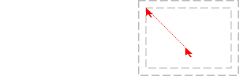

Module mouse
awesome mouse API.
The mouse buttons are represented as index. The common ones are:

It is possible to be notified of mouse events by connecting to various
client, widgets and wibox signals:
mouse::entermouse::leavemouse::pressmouse::releasemouse::move
It is also possible to add generic mouse button callbacks for clients,
wiboxes and the root window. Those are set in the default rc.lua as such:
root:
root.buttons(awful.util.table.join( awful.button({ }, 3, function () mymainmenu:toggle() end), awful.button({ }, 4, awful.tag.viewnext), awful.button({ }, 5, awful.tag.viewprev) ))
client:
clientbuttons = awful.util.table.join( awful.button({ }, 1, function (c) client.focus = c; c:raise() end), awful.button({ modkey }, 1, awful.mouse.client.move), awful.button({ modkey }, 3, awful.mouse.client.resize) )
See also mousegrabber
Info:
- Copyright: 2008-2009 Julien Danjou
- Author: Julien Danjou <[email protected]>
Functions
| object_under_pointer () | Get the client or any object which is under the pointer. |
| awful.mouse.client.move (c, snap, finished_cb) | Move a client. |
| awful.mouse.wibox.move (w) | Move the wibox under the cursor. |
| awful.mouse.client.resize (c, corner[, args={}]) | Resize a client. |
| coords ([coords_table=nil[, silent=nil]]) | Get or set the mouse coords. |
Object properties
| screen | The screen under the cursor |
| current_client | Get the client currently under the mouse cursor. |
| current_wibox | Get the wibox currently under the mouse cursor. |
| current_widgets | Get the widgets currently under the mouse cursor. |
| current_widget | Get the topmost widget currently under the mouse cursor. |
| current_widget_geometry | Get the current widget geometry. |
| current_widget_geometries | Get the current widget geometries. |
| is_left_mouse_button_pressed | True if the left mouse button is pressed. |
| is_right_mouse_button_pressed | True if the right mouse button is pressed. |
| is_middle_mouse_button_pressed | True if the middle mouse button is pressed. |
Request handlers
| awful.mouse.resize_handler | Default handler for request::geometry signals with “mouse.resize” context. |
Theme variables
| beautiful.snap_bg | The snap outline background color. |
| beautiful.snap_border_width | The snap outline width. |
| beautiful.snap_shape | The snap outline shape. |
| beautiful.snapper_gap | The gap between snapped contents. |
Deprecated functions
| awful.mouse.client_under_pointer [deprecated] | Get the client object under the pointer. |
| awful.mouse.client.dragtotag.border [deprecated] | Move a client to a tag by dragging it onto the left / right side of the screen. |
| awful.mouse.client.corner [deprecated] | Get a client corner coordinates. |
Fields
| awful.mouse.snap.default_distance | The default snap distance. |
| awful.mouse.snap.edge_enabled | Enable screen edges snapping. |
| awful.mouse.snap.client_enabled | Enable client to client snapping. |
| awful.mouse.drag_to_tag.enabled | Enable changing tag when a client is dragged to the edge of the screen. |
lib.awful.mouse.resize Functions
| beautiful.cursor_mouse_resize | The resize cursor name. |
| beautiful.cursor_mouse_move | The move cursor name. |
| awful.mouse.resize.set_mode (m) | Set the resize mode. |
| awful.mouse.resize.add_enter_callback (cb, context) | Add an initialization callback. |
| awful.mouse.resize.add_move_callback (cb, context) | Add a “move” callback. |
| awful.mouse.resize.add_leave_callback (cb, context) | Add a “leave” callback This callback is executed just before the mousegrabber stop |
| awful.mouse.resize (client, context[, args={}]) | Resize the drawable. |
lib.awful.mouse.snap Functions
| awful.mouse.snap (c, snap, x, y, fixed_x, fixed_y) | Snap a client to the closest client or screen edge. |
Functions
Methods- object_under_pointer ()
-
Get the client or any object which is under the pointer.
Returns:
-
client.object or nil
A client or nil.
- awful.mouse.client.move (c, snap, finished_cb)
-
Move a client.
- c The client to move, or the focused one if nil.
- snap The pixel to snap clients.
- finished_cb Deprecated, do not use
- awful.mouse.wibox.move (w)
-
Move the wibox under the cursor.
- w wibox The wibox to move, or none to use that under the pointer
- awful.mouse.client.resize (c, corner[, args={}])
-
Resize a client.
- c The client to resize, or the focused one by default.
- corner string The corner to grab on resize. Auto detected by default.
- args table A set of awful.placement arguments (default {})
Returns:
-
string
The corner (or side) name
- coords ([coords_table=nil[, silent=nil]])
-
Get or set the mouse coords.

Usage example output:
235- coords_table None or a table with x and y keys as mouse
coordinates.
- x integer The mouse horizontal position (default nil)
- y integer The mouse vertical position (default nil)
- silent boolean Disable mouse::enter or mouse::leave events that could be triggered by the pointer when moving. (default false)
Returns:
- integer table.x The horizontal position
- integer table.y The vertical position
- table table.buttons Table containing the status of buttons, e.g. field [1] is true when button 1 is pressed.
Usage:
-- Get the position print(mouse.coords().x) -- Change the position mouse.coords { x = 185, y = 10 }
- coords_table None or a table with x and y keys as mouse
coordinates.
Object properties
- screen
-
The screen under the cursor
Type:
- screen
- current_client
-
Get the client currently under the mouse cursor.
Type:
- The client or nil client
- current_wibox
-
Get the wibox currently under the mouse cursor.
Type:
- The wibox or nil wibox
- current_widgets
-
Get the widgets currently under the mouse cursor.
Type:
- list nil or table The widget list
- current_widget
-
Get the topmost widget currently under the mouse cursor.
Type:
- widget widget or nil The widget
See also:
- current_widget_geometry
-
Get the current widget geometry.
Type:
- The optional table geometry.
See also:
- current_widget_geometries
-
Get the current widget geometries.
Type:
- A optional table list of geometry tables.
See also:
- is_left_mouse_button_pressed
-
True if the left mouse button is pressed.
Type:
- boolean
- is_right_mouse_button_pressed
-
True if the right mouse button is pressed.
Type:
- boolean
- is_middle_mouse_button_pressed
-
True if the middle mouse button is pressed.
Type:
- boolean
Request handlers
- awful.mouse.resize_handler
-
Default handler for
request::geometrysignals with “mouse.resize” context.Arguments:
Theme variables
- beautiful.snap_bg
-
The snap outline background color.
Type:
- color color, string, gradient or pattern
- beautiful.snap_border_width
-
The snap outline width.
Type:
- integer
- beautiful.snap_shape
-
The snap outline shape.
Type:
- shape function A gears.shape compatible function
- beautiful.snapper_gap
-
The gap between snapped contents.
Type:
- default: number 0)
Deprecated functions
- awful.mouse.client_under_pointer [deprecated]
-
Get the client object under the pointer.
See also:
- awful.mouse.client.dragtotag.border [deprecated]
-
Move a client to a tag by dragging it onto the left / right side of the screen.
param:
- c The client to move
- awful.mouse.client.corner [deprecated]
-
Get a client corner coordinates.
param:
Fields
- awful.mouse.snap.default_distance
-
The default snap distance.
- default_distance integer (default 8)
See also:
- awful.mouse.snap.edge_enabled
- Enable screen edges snapping.
- awful.mouse.snap.client_enabled
- Enable client to client snapping.
- awful.mouse.drag_to_tag.enabled
- Enable changing tag when a client is dragged to the edge of the screen.
lib.awful.mouse.resize Functions
- beautiful.cursor_mouse_resize
-
The resize cursor name.
Type:
- cursor string (default cross)
- beautiful.cursor_mouse_move
-
The move cursor name.
Type:
- cursor string (default fleur)
- awful.mouse.resize.set_mode (m)
-
Set the resize mode.
The available modes are:
- live: Resize the layout everytime the mouse moves.
- after: Resize the layout only when the mouse is released.
Some clients, such as XTerm, may lose information if resized too often.
- m string The mode
- awful.mouse.resize.add_enter_callback (cb, context)
-
Add an initialization callback.
This callback will be executed before the mouse grabbing starts.
- cb function The callback (or nil)
- context string The callback context
- awful.mouse.resize.add_move_callback (cb, context)
-
Add a “move” callback.
This callback is executed in “after” mode (see set_mode) instead of
applying the operation.
- cb function The callback (or nil)
- context string The callback context
- awful.mouse.resize.add_leave_callback (cb, context)
-
Add a “leave” callback
This callback is executed just before the mousegrabber stop
- cb function The callback (or nil)
- context string The callback context
- awful.mouse.resize (client, context[, args={}])
-
Resize the drawable.
Valid
argsare:- enter_callback: A function called before the mousegrabber starts.
- move_callback: A function called when the mouse moves.
- leave_callback: A function called before the mousegrabber is released.
- mode: The resize mode.
- client client A client.
- context string The resizing context.
- args table A set of awful.placement arguments. (default {})
lib.awful.mouse.snap Functions
- awful.mouse.snap (c, snap, x, y, fixed_x, fixed_y)
-
Snap a client to the closest client or screen edge.
- c The client to snap.
- snap The pixel to snap clients.
- x The client x coordinate.
- y The client y coordinate.
- fixed_x True if the client isn’t allowed to move in the x direction.
- fixed_y True if the client isn’t allowed to move in the y direction.